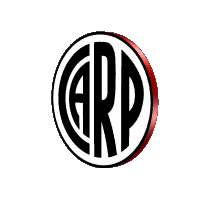
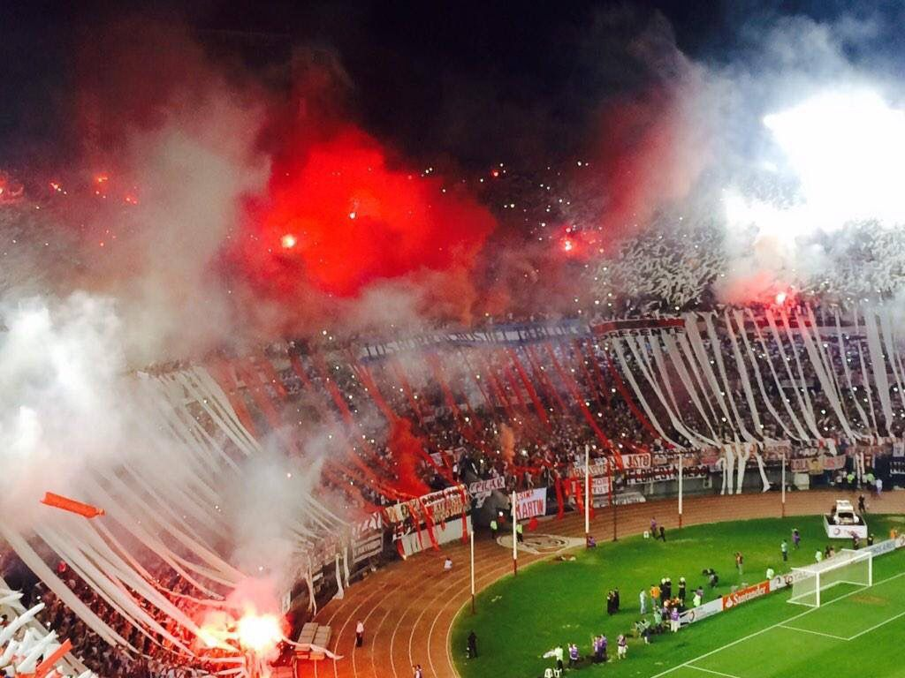
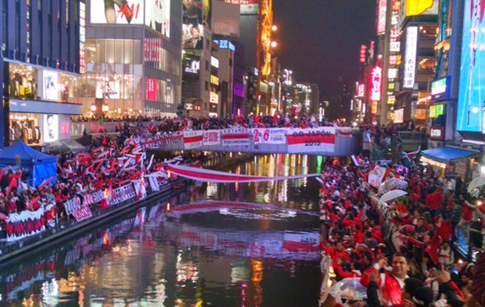
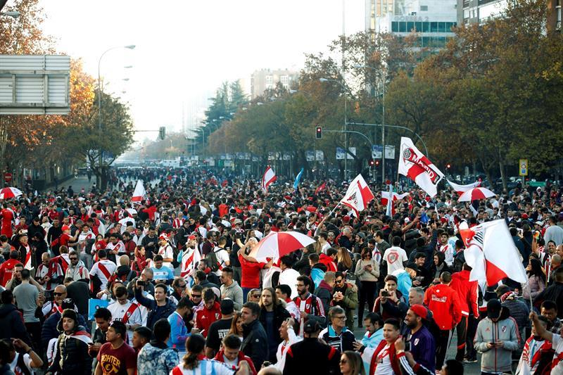

HINCHADA
MILLONARIOS
Con el tiempo, River dejó el barrio, en 1923, e instaló su cancha en la Avenida Alvear y Tagle. Con la llegada del profesionalismo, trató de armar un gran equipo y contrató a Carlos Peucelle, por quien pagó 10 mil pesos a Sportivo Buenos Aires. Allí nació el mote de “Los millonarios”.
GALLINAS
River estuvo 18 años sin conseguir títulos entre las décadas del 50 y el 70. Pero llegó a una final de la Copa Libertadores en 1966. El partido decisivo con Peñarol se jugó en el Estadio Nacional de Santiago de Chile. Ganaba River por 2 a 0. Los uruguayos empataron y debieron ir al suplementario. Allí Peñarol consiguió dos goles más y se quedó con la copa. Al regreso enfrentó a Banfield como visitante. Desde la tribuna local lanzaron una gallina con una banda roja. Desde entonces, los jugadores y los simpatizantes de River son gallinas. Por extensión, al Monumental le dicen “El Gallinero”.
LA MÁQUINA
El equipo más brillante que tuvo River en su historia fue en los cuarenta. El periodista Ricardo Lorenzo Borocotó lo Bautizó “La Máquina”. Cada vez que aparece un conjunto con buen nivel se hace inevitable la mención del nombre. A veces con justicia; otras, no.
CANCIONES POPULARES
- Borracho
- Señores, yo soy del gallinero
- Boca Compadre
- El mas grande sigue siendo River Plate
- Yo vengo por la camiseta
- Ay che bostero, mira que distintos somos
- Yo te quiero River Plate
- De corazon yo vengo a verte
- Boca no chamuyes mas
- La academia, el rojo y los bosteros
- Un gitana hermosa
- La que deja la vida por los colores
- Ahi viene la hinchada
- Los bosteros son asi
- Para no olvidar
River, fue equipo sudamericano que mas hinchas llevo en la historia del Mundial de Clubes.
GALERIA DE FOTOS


